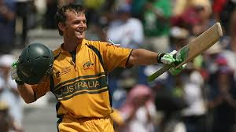
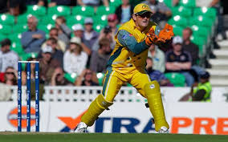

Adam Gilchrist
Role: Wicketkeeper-Batsman
Bio: Adam Gilchrist revolutionized the role of wicketkeeper-batsmen in world cricket with his aggressive batting at the top of the order. Known for his explosive stroke play, he was a key part of Australia’s dominance in the early 2000s, contributing to multiple World Cup victories.
Career Stats
| Format | Matches | Innings | Not Outs | Runs | High Score | Average | Strike Rate | 100s | 50s | Catches | Stumpings |
|---|---|---|---|---|---|---|---|---|---|---|---|
| Test | 96 | 137 | 20 | 5570 | 204* | 47.60 | 81.95 | 17 | 26 | 379 | 37 |
| ODI | 287 | 279 | 11 | 9619 | 172 | 35.89 | 96.94 | 16 | 55 | 417 | 55 |
| T20I | 13 | 13 | 1 | 272 | 48 | 22.67 | 141.66 | 0 | 1 | 17 | 2 |
Memorable Moments

Gilchrist's iconic knock of 149 in the 2007 World Cup Final, leading Australia to victory.
Adam Gilchrist captaining Australia in key matches, demonstrating his leadership alongside his wicketkeeping and batting prowess.